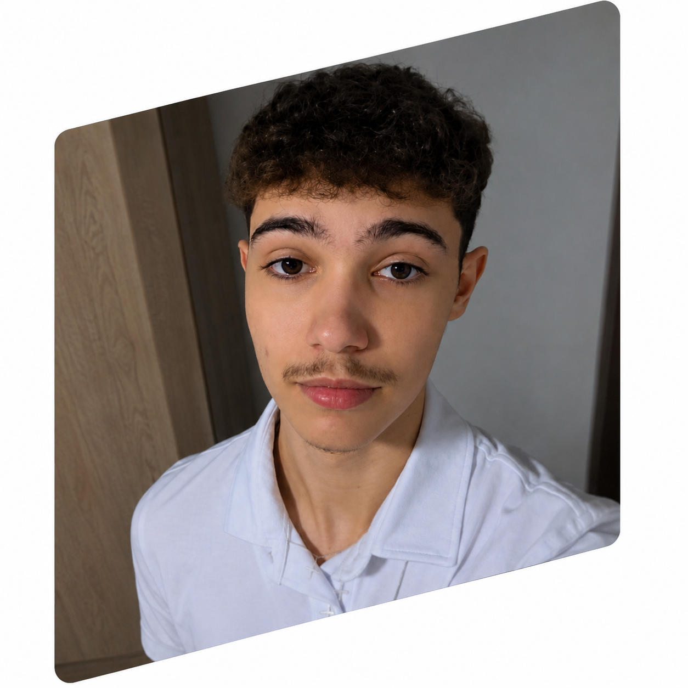

Desenvolvedor
Front-End &
Back-End
Localizado no Ceará

Localizado no Ceará
Desenvolvi aplicativo financeiro em Java, utilizando recursos como: JavaFX, JDBC, JUnit, SpringBoot e JPA. Com Python, possuo pequenos trabalhos de análise e tratamento de dados utilizando o framework Pandas e também Jupyter Notebooks, além de possuir um pequeno projeto com aplicação de IA para tratamento de dados usando o framework Scikit-learn. Na parte Front-End possuo pequenos projetos relativos a layout com HTML5 e CSS3, como o site Android, Cordel e Bikcraft, além do uso de JavaScript para aplicação web.
Trabalhei no desenvolvimento de aplicações com Java, incluindo consumo e criações de APIs, teste de erros
e integração com banco de dados.
Trabalhei no desenvolvimento de layouts responsivos, consumos de APIs, aplicações web, construção de interfaces.
Atualmente, sou graduando em Ciência da Computação pelo IFCE Maracanaú, atuando como bolsista no NDS. Além disso, estou finalizando minha Capacitação em Java pelo IRede e possuo certificação em Python pelo curso do Luiz Otávio Miranda.